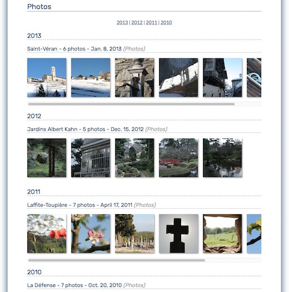

Django Gallery - A simple gallery, extended. Based on myks gallery

Introduction
Django-gallery is a simple photo gallery with granular access control.
It powers myks's humble photo gallery, allowing me to:
Use case
Rather than use a photo manager, I just create a new directory for each event and put my photos inside. I include the date of the event in the name of the directory and I rename photos based on their date and time. Then I regularly synchronize my collection to a remote storage. I serve my gallery from there.
If you have a similar workflow, you may find django-gallery useful.
Whenever I upload new photos, I re-scan the collection with ./manage.py scanphotos or with the button in the admin. django-gallery detects new albums and photos. Then I define users, groups and access policies in the admin.
Album access policies control the visibility of albums. Most often, you'll enable the "photos inherit album access policy" option. If you need more control, for instance to share only a subset of an album, you can disable this option and use photo access policies. You still need to define an album access policy and it should be a superset of the photo access policies.
Obviously, requiring usernames and passwords doesn't work well for sharing photos with relatives. You might want to use django-sesame.
Setup
django-gallery is a pluggable Django application. It requires Django ≥ 1.8 and Pillow and pytz. It works with any version of Python supported by Django.
Architecture
django-gallery requires two storage areas:
django-gallery accesses them through Django's file storage API, meaning that you can use any storage for which a Django storage backend exists. You should use a third-party storage backend if you're storing files in a cloud service and Djang's built-in FileSystemStorage if you're storing them locally on the filesystem, typically for local development.
Installation guide
Here's the general process for integrating django-gallery into an existing website:
The source contains a sample application in the example directory. It can help you see how everything fits together. See below for how to run it.
Permissions
django-gallery defines two permissions:
Settings
GALLERY_DEFAULT_PUBLIC
Default: True
Permissions for the gallery's visibility to anonymous users. If set to false will need to be manually changed to be visible without logging in. This affects when a new gallery is created via upload or new creation.
GALLERY_PHOTO_STORAGE
Default: not defined
Dotted Python path to the Django storage class for the original photos. It must be readable by the application server but should not be writable.
While GALLERY_PHOTO_STORAGE behaves like Django's DEFAULT_FILE_STORAGE setting, you'll usullay point it to a factory function that initializes and returns a Django storage instance because you won't want to use globally configured values for settings such as the S3 bucket name.
For compatibility for versions prior to 0.5, if GALLERY_PHOTO_STORAGE isn't defined but GALLERY_PHOTO_DIR is, the photo storage will be set to FileSystemStorage(location=GALLERY_PHOTO_DIR).
GALLERY_CACHE_STORAGE
Default: not defined
Dotted Python path to the Django storage class for the thumbnails and album archives. It must be readable and writable by the application server.
It behaves like GALLERY_PHOTO_STORAGE.
For compatibility for versions prior to 0.5, if GALLERY_CACHE_STORAGE isn't defined but GALLERY_CACHE_DIR is, the photo storage will be set to FileSystemStorage(location=GALLERY_CACHE_DIR).
GALLERY_PATTERNS
Default: ()
Tuple of (category name, regular expression) defining how to extract album information — category, date, name — from the paths of photo files.
The regular expressions match paths relative to the root of the photo storage. They contain the following captures:
Here's an example, for photos stored with names such as 2013/01_19_Snow in Paris/2013-01-19_19-12-43.jpg:
GALLERY_PATTERNS = (
('Photos',
r'(?P<a_year>\d{4})/(?P<a_month>\d{2})_(?P<a_day>\d{2})_'
r'(?P<a_name>[^_/]+)/'
r'(?P<p_year>\d{4})-(?P<p_month>\d{2})-(?P<p_day>\d{2})_'
r'(?P<p_hour>\d{2})-(?P<p_minute>\d{2})-(?P<p_second>\d{2})\.jpg'),
)
GALLERY_IGNORES
Default: ()
Tuple of regular expressions matching paths within GALLERY_PHOTO_STORAGE. Files matching one of these expressions will be ignored when scanning photos.
GALLERY_RESIZE_PRESETS
Default: {}
Dictionary mapping thumbnail presets names to (width, height, crop). If crop is True, the photo will be cropped and the thumbnail will have exactly the requested size. If crop is False, the thumbnaill will be smaller than the requested size in one dimension to preserve the photo's aspect ratio.
The default templates assume the following values:
GALLERY_RESIZE_PRESETS = {
'thumb': (128, 128, True),
'standard': (768, 768, False),
}
You may double these sizes for better results on high DPI displays.
GALLERY_RESIZE_OPTIONS
Default: {}
Dictionary mapping image formats names to to dictionaries of options for Pillow's save method. Options are described for each file format in Pillow's documentation.
The following a reasonable value for high-quality thumbnails and previews:
GALLERY_RESIZE_OPTIONS = {
'JPEG': {'quality': 95, 'optimize': True},
}
GALLERY_SENDFILE_HEADER
Default: ''
Name of the HTTP header that triggers sendfile on your web server. Use 'X-Accel-Redirect' for nginx and 'X-SendFile' for Apache.
GALLERY_SENDFILE_ROOT
Default: ''
Part to strip at the beginning of the paths in the sendfile header. The header will contain the absolute path to files, minus this prefix. This is generally useful for nginx and not necessary for Apache.
GALLERY_TITLE
Default: "Gallery"
Title of your photo gallery. This is only used by the default templates of the index and year views.
GALLERY_PREVIEW_COUNT
Default: 5
Number of thumbnails shown in the preview of each album.
GALLERY_ARCHIVE_EXPIRY
Default: None or 60
Duration in days during which album archives are kept in cache. None disables expiration.
When using a remote storage system such as S3, configuring an expiry policy for the export folder directly on the storage system is more efficient.
For compatibility with versions prior to 0.5, if GALLERY_CACHE_DIR is defined, GALLERY_ARCHIVE_EXPIRY defaults to 60.
Running the sample application
Changelog
0.1
Changed permissions and model to support custom user models.
Changed albums to default to public = True
Updated example to contain all options
FORK from myks
0.6
Under development
0.5
This version uses the Django file storage API for all operations on files, making it possible to use services such as Amazon S3 or Google Cloud Storage for storing photos and thumbnails. It introduces the GALLERY_PHOTO_STORAGE and GALLERY_CACHE_STORAGE settings. They supersede GALLERY_PHOTO_DIR and GALLERY_CACHE_DIR.
When upgrading to 0.5 or later, you should clear the cache directory. Previously cached thumbnails and exports won't be used by this version.
It also include some smaller changes.
0.4
0.3
0.2
0.1